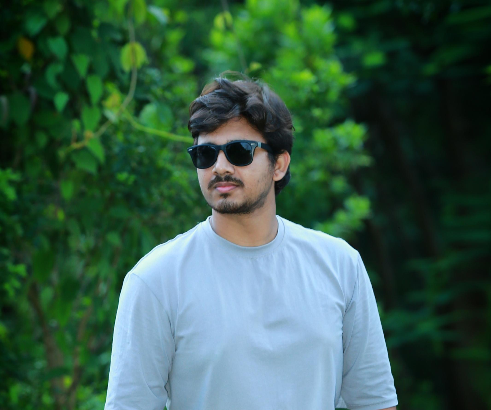

H. M. Nahid Kawsar
Applied Mathematician · ML Researcher · Published Author
Researcher in applied mathematics and machine learning with published work in SCIE Q1 and ESCI Q2 journals and IEEE conferences. Best Technical Presenter at IEEE ICCIT 2024. Focused on building efficient ML models for resource-constrained devices using mathematical rigour.

About Me
I am H. M. Nahid Kawsar, an Applied Mathematics researcher from Noakhali, Bangladesh, with a strong interest in machine learning, mathematical modelling, and building AI systems that work in the real world — not just on paper.
My core focus is on designing ML models that are efficient enough to run on low-end, resource-constrained devices without compromising accuracy. I believe the real challenge in machine learning is not just achieving high performance in controlled benchmarks, but making those models lean, interpretable, and deployable where computational resources are limited. Mathematics is my primary tool for doing that rigorously.
My research spans several applied domains — from respiratory disease detection and infectious disease dynamics to student mental health risk assessment. Across all of these, the common thread is the same: using mathematical structure to build models that are both accurate and explainable. I work comfortably at the intersection of numerical methods, deep learning, and statistical modelling.
I have published in peer-reviewed journals including Biomedical Signal Processing and Control (SCIE Q1, Impact Factor 4.9) and Arab Journal of Basic and Applied Sciences (ESCI Q2, Impact Factor 3.5), and presented at IEEE ICCIT 2024, where I received the Best Technical Presentation Award out of Session 37.
Beyond research, I actively build practical systems — RAG-based conversational AI, LLM-powered chatbots, and NLP-driven applications — always with an eye toward keeping them lightweight and grounded in sound methodology. I care about work that is reproducible, honest, and actually useful.

📸profile-nahid-casual.jpg